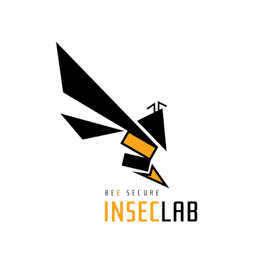
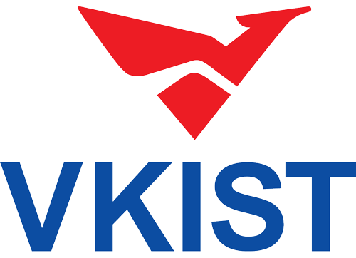

Ho Chi Minh City University of Technology (HUTECH)
2022 – 2026 (Expected)B.S. in Robotics and Artificial Intelligence • HUTECH Institute of Engineering
Honors: Awarded the Talent Student Scholarship (Freshmen Welcome Ceremony Class of 2026)
thiennhan.math [at] gmail [dot] com
I am a final-year undergraduate researcher in Robotics and Artificial Intelligence at HUTECH University (Ho Chi Minh City University of Technology), Vietnam. I am affiliated with the Information Security Laboratory (InSec Lab) at the University of Information Technology (UIT), Vietnam National University, Ho Chi Minh City (VNU-HCM).
My research centers on applying modern machine learning, intelligent perception, and security analytics to high-impact challenges. Specifically, my current work focuses on Large Language Models (LLMs) & Agentic Workflows for smart contract security (automated vulnerability detection & LLM-augmented fuzzing), Spiking Neural Networks (SNNs) & Hyperspectral Remote Sensing, Privacy-Preserving AI, and Brain–Computer Interfaces (BCI) for neural decoding. My contributions have been accepted at premier venues and journals including Nature Food (Nature Portfolio, IF: 24.7, Top 1% worldwide), SOICT 2026 (Oral Presentation), FAIR 2026, ISNST 2026, and VJSS-2026.
Deeply committed to the scientific community, I actively engage in peer review and educational outreach. I serve as a Reviewer for ACDSA 2027 (Rio de Janeiro, Brazil) and have contributed as a STEM Instructor at the Vietnam–Korea Institute of Science and Technology (VKIST).
I am always enthusiastically open to research collaborations, academic discussions, and coffee chats!
| Nov, 2026 | 🌟 Major Scientific Milestone! Our manuscript "A-Eye Fruit: An Efficient Wavelet-Guided Spiking Neural Network for Hyperspectral Durian Sugar Content Prediction" has been accepted for publication in Nature Food (Nature Portfolio, IF: 24.7, Top 1% worldwide / Rank #1 in Food Science & Technology)! |
| Oct, 2026 | 🎉 TriFuse-R has been accepted for an Oral Presentation and publication in the SOICT 2026 proceedings! (Paper ID: 3550). |
| Oct, 2026 | 🥉 Third Prize (Southern Regional Round - Category C) – National Youth AI Innovation Contest 2026 (Cuộc thi Sáng tạo trẻ Quốc gia trong lĩnh vực Trí tuệ nhân tạo năm 2026), organized by the Center for Science, Technology and Young Talents Development (CYSTAD - Central Committee of the Youth Union), for project "FRUITSCAN" (Oct 22, 2026). |
| Oct, 2026 | 🥈 Second Prize – The 7th HUIT Startup Competition 2026 (Student Category), organized by Ho Chi Minh City University of Industry and Trade (HUIT) IEC, Tuổi Trẻ Newspaper & National Innovation Center (NIC). |
| Oct, 2026 | 🥈 Second Prize – Japan – Vietnam Startup Idea Competition (SJD TANQ 2026), organized by Hanoi University of Industry (HaUI) & TANQ SJD. |
| Oct, 2026 | 🌿 Selected as an official Youth Delegate for LCOY Viet Nam 2026 (Local Conference of Youth on Climate Change), organized by Youth Climate Action Network (YNet Vietnam / YOUNGO–UNFCCC). |
| Oct, 2026 | 🥇 First Prize – The 9th Agricultural Entrepreneurship Competition 2026, organized by Nong Lam University Ho Chi Minh City (NLU), for the project "Fruit Scan – Application of Hyperspectral Imaging (HSI) and AI in Fruit Quality Inspection and Disease/Fungus Detection". |
| Oct, 2026 | 🎉 Abstract accepted for presentation at ISNST 2026 (2026 International Symposium on Novel and Sustainable Technology, Tainan, Taiwan): "Compact Hyperspectral Representations for Cherry Tomato Surface Symptoms: From Classification to Segmentation". |
| Oct, 2026 | 🎓 Awarded the Talent Student Scholarship by HUTECH Institute of Engineering, Ho Chi Minh City University of Technology (HUTECH). |
| Sep, 2026 | 🏆 Special Prize – InnoStar 2026 (Student Startup Idea Competition). |
| Sep, 2026 | 🌟 Potential Prize – VietFuture Awards 2026 (organized by VINASA) for the project "Development of an Intelligent Vision-Based Robotic Picking System for Warehouse Automation" (Emerging Technologies Field). |
| Sep, 2026 | 🍁 Awarded a Full Travel & Accommodation Grant to attend the Autumn School on Applied Mathematics in Climate, Environment and Sustainable Development at Vietnam Institute for Advanced Study in Mathematics (VIASM), Hanoi. |
| Sep, 2026 | 🎉 Two papers accepted at FAIR 2026 (The 19th National Conference on Fundamental and Applied IT Research): one on RSVP Brain–Computer Interfaces and one on hyperspectral mineral alteration mapping. |
| Sep, 2026 | 📝 Invited to serve as a Reviewer for the International Conference on Artificial Intelligence, Computer, Data Sciences, and Applications (ACDSA 2027), Rio de Janeiro, Brazil. |
| Sep, 2026 | ✈️ Selected for The NEXGen 2026 International Trip (Bangkok, Thailand) by New Energy Nexus Vietnam (Fully Funded). |
| Sep, 2026 | 🎖️ Consolation Prize – Bach Khoa Innovation 2026 (University Category), Ho Chi Minh City University of Technology (HCMUT) & Embassy of France in Vietnam. |
| Aug, 2026 | 🥈 Second Prize – AI Challenge 2026 (University Division), National Scientific Conference on AI for Economics and Business (AI4Econ&Biz 2026), Vietnam. |
| Aug, 2026 | 🎓 Accepted to IACR-VIASM Summer School on Cryptography 2026, Hanoi, Vietnam. |
| Jul, 2026 | 🥈 Second Prize & 🥉 Third Prize at THINKATHON GREENOVATION 2026 (UEH Mekong Campus). |
| Jul, 2026 | 📄 arXiv preprint TinyCNNDeep published: Lightweight Attention-Based CNN for EEG Classification. |
| Jun, 2026 | 👨🏫 Started STEM Instructor role at VKIST 2026 (Vietnam–Korea Institute of Science and Technology). |
Accepted Nature Portfolio Top 1% (Rank #1) • IF: 24.7 Nature Food (2026) • 5-Year IF: 31.7
Academic development of the A-Eye Fruit project (awarded 20+ entrepreneurship & innovation competitions). Supported by the Hyperspectral and Thermal Remote Sensing Laboratory (HyperSens).
@article{vo2026aeyefruit,
title={A-Eye Fruit: An Efficient Wavelet-Guided Spiking Neural Network for Hyperspectral Durian Sugar Content Prediction},
author={Vo, Thien Nhan and Xue, Lu and Yin, Rongxin and Zhang, Pangzhen},
journal={Nature Food},
publisher={Nature Portfolio},
year={2026},
note={Accepted, IF: 24.7, Top 1% (Rank 1/143)}
}
Under Review Biomedical Signal Processing and Control (Elsevier)
@article{vo2026eegprivacy,
title={Adaptive Privacy Routing for EEG Representation Protection via Proximal Policy Optimization},
author={Vo, Thien Nhan and Phung, Thi Hien and Tran, Xuan-The},
journal={Biomedical Signal Processing and Control (Under Review)},
year={2026}
}
Under Review Applied Numerical Mathematics
@article{vo2026allencahn,
title={A Sharp Stabilized Semi-Implicit Scheme for the Allen--Cahn Equation: Discrete Invariant Regions, Energy Dissipation, and M-Matrix Contractivity},
author={Vo, Thien Nhan and others},
journal={Applied Numerical Mathematics (Under Review)},
year={2026}
}
Under Review Springer Nature • Preprint: arXiv:2602.01019 [q-bio.NC], 2026
@article{tran2026eegvariability,
title={Inter- and Intra-Subject Variability in EEG: A Review},
author={Tran, Xuan-The and Vo, Thien-Nhan and Vu, Son-Tung and Tran, Thoa-Thi and Nguyen, Manh-Dat and Do, Thomas and Lin, Chin-Teng},
journal={arXiv preprint arXiv:2602.01019},
year={2026}
}
Accepted FAIR 2026 • The 19th National Conference on Fundamental and Applied IT Research, Ho Chi Minh City, Vietnam, October 2026.
@inproceedings{vo2026fairbci,
title={A Lightweight Spatial-Temporal Attention Network for Efficient EEG-Based Target Detection in RSVP Brain-Computer Interfaces},
author={Vo, Thien Nhan and others},
booktitle={The 19th National Conference on Fundamental and Applied IT Research (FAIR'2026)},
year={2026}
}
Accepted FAIR 2026 • The 19th National Conference on Fundamental and Applied IT Research, Ho Chi Minh City, Vietnam, October 2026.
@inproceedings{vo2026fairmineral,
title={Hyperspectral Mineral Alteration Mapping for Gold Exploration in Serra Branca Brazil},
author={Vo, Thien Nhan and others},
booktitle={The 19th National Conference on Fundamental and Applied IT Research (FAIR'2026)},
year={2026}
}
Accepted Oral Presentation SOICT 2026 • The 15th International Symposium on Information and Communication Technology • Proceedings (Paper ID: 3550)
@inproceedings{tu2026trifuse,
title={TriFuse-R: Reliability-Aware Multimodal Fusion for Disaster Damage Assessment},
author={Tu, Hoang Thanh and Vo, Thien Nhan and Phung, Thi Hien and Nguyen, Xuan Phuong Ngan and Huynh, Ngoc Ngan and Truong, Thanh Xuan},
booktitle={Proceedings of the 15th International Symposium on Information and Communication Technology (SOICT)},
year={2026},
note={Oral Presentation, Paper ID: 3550}
}
Accepted 2026 International Symposium on Novel and Sustainable Technology (ISNST 2026), Tainan City, Taiwan, Oct 22–23, 2026. Accepted for Abstract Presentation.
@inproceedings{pham2026isnst,
title={Compact Hyperspectral Representations for Cherry Tomato Surface Symptoms: From Classification to Segmentation},
author={Pham, Quoc Thien and Vo, Thien Nhan and Lu, Sheng-En and Liou, Nai-Shang},
booktitle={2026 International Symposium on Novel and Sustainable Technology (ISNST 2026)},
year={2026}
}
Accepted Vietnam–Japan Semiconductor Symposium 2026 (VJSS-2026), Hanoi, Vietnam, September 2026. Accepted for Poster Presentation.
@inproceedings{vo2026vjss,
title={A Label-Efficient and Interpretable Framework for Automated Wafer Defect Inspection via Self-Supervised Vision Transformers and Active Learning},
author={Vo, Thien Nhan and others},
booktitle={Vietnam-Japan Semiconductor Symposium (VJSS-2026)},
year={2026}
}
arXiv Preprint arXiv:2606.26506 [eess.SP], 2026
@article{vo2026tinycnndeep,
title={TinyCNNDeep: Lightweight Attention-Based CNN for EEG Classification of Eye States and Sleep Deprivation},
author={Vo, Thien Nhan and Tran Thi, Yen Nhi and Nguyen Xuan Phuong, Ngan and Tran, Xuan-The},
journal={arXiv preprint arXiv:2606.26506},
year={2026}
}
B.S. in Robotics and Artificial Intelligence • HUTECH Institute of Engineering
Honors: Awarded the Talent Student Scholarship (Freshmen Welcome Ceremony Class of 2026)
Research Affiliate • Information Security Laboratory (InSec Lab)
Focus: LLMs & Agentic Workflows for Smart Contract Fuzzing and Privacy-Preserving AI • Advised by PhD. Phan The Duy

